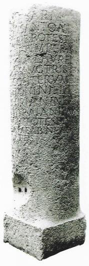
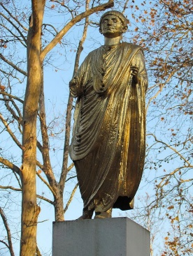
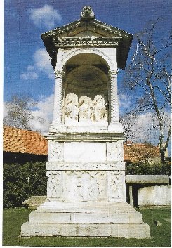
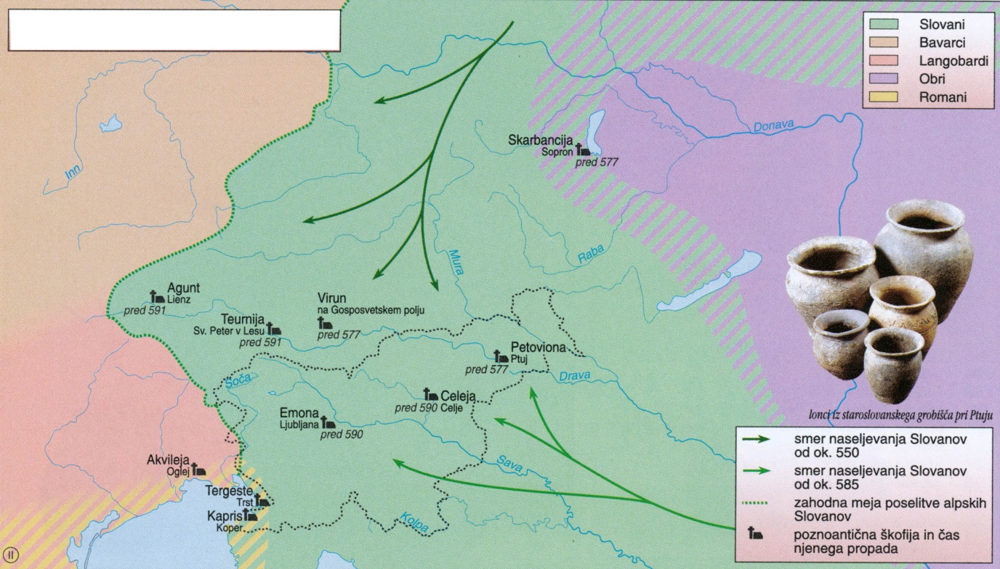
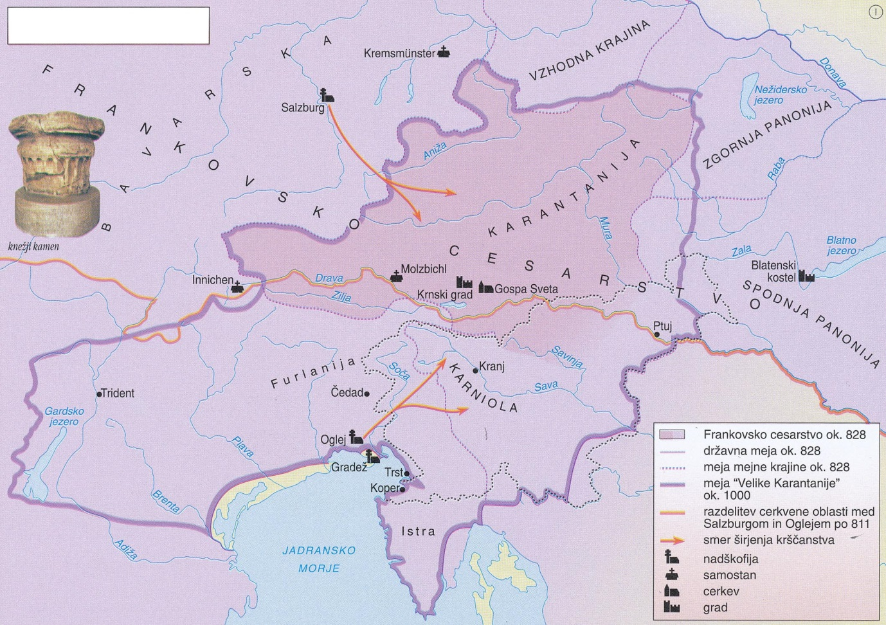
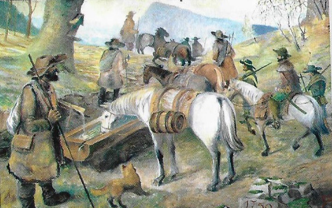

Antična kulturna dediščina na tleh današnje Slovenije
1
Vera v posmrtno življenje in s tem povezani obredi so
bili del življenja prazgodovinskih skupnosti.
2 točki
V časopisu Slovenec so novembra 1935 zapisali: Po svetu
so Vače zaslovele šele pred kakimi 50 leti, ko je po
naključju prišlo na dan, da hranijo stari grobovi,
raztreseni vsepovsod od Slivne do Svete gore, sila
zanimive in dragocene starinske stvari.
Vir: Kladnik, D., 2015: Slovenija v zgodbah, str.
23. Cankarjeva založba. Ljubljana
1.1
Katero znamenito najdbo opisuje besedilo?
Rešitev
vaška situla / situla iz Vač
1.2
Pojasnite pomen te najdbe kot zgodovinskega vira.
Rešitev (ena od)
- Situla je pomembna za proučevanje vsakdanjega življenja in verskih predstav.
- Na njej so prikazane podobe tedanjega vsakdanjega življenja.
- Sporoča nam, kako so vladajoči urejali življenje svoje skupnosti.
- Dokazuje razvitost obrti tedanjega časa.
2
V navezovanju trgovskih stikov je za Rimljane postal
pomemben tudi prostor današnje Slovenije. Pri reševanju
si pomagajte s sliko 5 v barvni prilogi.
3 točke

2.1
Katero kolonijo so ustanovili kot izhodišče za
širjenje rimskega vpliva na ta prostor?
Rešitev
Akvileja / Oglej
2.2
Na katero državno tvorbo so Rimljani naleteli pri
širjenju v alpski prostor?
Rešitev
Noriško kraljestvo / Norik
2.3
Pojasnite, kako so Rimljani zaščitili Apeninski
polotok pred možnimi vpadi z današnjega slovenskega
prostora.
Rešitev (ena od)
- Rimljani so vzpostavili obrambni sistem z zapornimi zidovi, stolpi in utrdbami.
- Rimljani so vzpostavili sistem alpskih zapor (Claustra Alpium Iuliarum) pred vdori tujih ljudstev.
- Z zapornimi zidovi in utrdbami so varovali pomembne poti in prehode proti Apeninskemu polotoku.
3
Rimljani so osvojena ozemlja na območju današnje
Slovenije razdelili na tri upravne enote. Pri reševanju
si pomagajte s sliko 5 v barvni prilogi.
Na katere tri upravne enote so Rimljani razdelili današnje slovensko ozemlje? 1 točka
Na katere tri upravne enote so Rimljani razdelili današnje slovensko ozemlje? 1 točka
Rešitev
Norik · X. regija / Venetia et
Histria · Panonija
4
Za lažji gospodarski in vojaški nadzor so Rimljani na
današnjem slovenskem ozemlju ustanavljali mesta, ki so
imela status kolonije ali municipija.
Povežite rimska mesta s statusom (K = kolonija, M = municipij). 2 točki
Povežite rimska mesta s statusom (K = kolonija, M = municipij). 2 točki
| Mesto | Status |
|---|---|
| Celeja | M – municipij |
| Emona | K – kolonija |
| Neviodunum | M – municipij |
| Petoviona | K – kolonija |
Za 4 pravilne 2 t. · za 3–2 → 1 t.
5
S prihodom Rimljanov na današnje slovensko ozemlje se
je začel tudi gospodarski razvoj.
Obkrožite črke pred tremi pravilnimi trditvami. 3 točke
Obkrožite črke pred tremi pravilnimi trditvami. 3 točke
A – Razvoj vinogradništva na Slovenskem je povezan z
obdobjem rimske vladavine.
B – Rimljani so uvedli dvoletno kolobarjenje in
ralno poljedelstvo.
C – Vila rustika je pomembnejše gospodarsko središče
na podeželju.
D – Rudarstvo v času Rimljanov ni imelo večjega
pomena.
E – Veliko slovenskih muzejev ima lapidarije, kjer
hranijo dosežke rimskega steklarstva.
F – Kamnolomi na Pohorju so bili podlaga za razvito
kamnoseštvo.
6
Stik staroselcev z rimskim prebivalstvom je povzročil
romanizacijo.
2 točki
6.1
Pojasnite vpliv romanizacije na načrtovanje mestnih
naselbin.
Rešitev (dve od)
- Mesta so zasnovali v pravokotni obliki.
- Središče javnega življenja je bil forum.
- Uredili so kanalizacijo.
- Uredili so vodno oskrbo.
- Mesta so nastala iz vojaških utrdb.
6.2
Zakaj je bila romanizacija v mestih hitrejša kakor
na podeželju?
Rešitev (ena od)
- Mesta so bila del uprave, zato je bilo tam veliko rimskih uradnikov.
- V mestih je bilo največ rimskega prebivalstva.
- Meščani so dobili rimsko državljanstvo.
- Domače prebivalstvo je lažje trgovalo z Rimljani.
- Na podeželju je bil ta proces zaradi običajev in tradicije zelo počasen.
7
Na današnjem slovenskem ozemlju so Rimljani gradili
cestno omrežje. Pri reševanju si pomagajte s sliko 5 v
barvni prilogi.
3 točke
7.1
Kdo so bili glavni graditelji cest v rimski državi?
Rešitev
(rimska) vojska / vojaki
7.2
V kateri smeri je potekala najpomembnejša rimska
povezava čez slovensko ozemlje?
Rešitev
zahod – vzhod
7.3
Razložite, kaj so bili miljniki.

Rešitev (ena od)
- Miljniki so bili obcestni kamni, na katerih je bilo v miljah navedeno, koliko so posamezni cestni odseki oddaljeni od upravnih središč.
- Miljniki so bili obcestni kamni, na katerih je bil zapis o razdalji do naslednjega mesta.
8
V poznem obdobju rimskega cesarstva sta se na današnje
slovensko ozemlje širili monoteistični religiji.
2 točki
Vse je že kazalo, da bo zmagal Evgenij, a je Teodozijeva
prošnja k bogu očitno zalegla. Nepričakovano je zapihal
orkanski veter in pripomogel k zmagi. Evgenijevi vojaki
so se razbežali, a so jih nasprotniki dohiteli in
pobili, prav tako Evgenija. V bitki pri Frigidu naj bi
padlo 10.000 vojakov.
Vir: Kladnik, D., 2015: Slovenija v zgodbah, str.
41. Cankarjeva založba. Ljubljana
8.1
Kateri dve monoteistični religiji sta se širili na
današnje slovensko zemlje?
Rešitev
mitraizem · krščanstvo
8.2
Pojasnite daljnosežni pomen bitke pri Frigidu.
Rešitev (ena od)
- S to bitko je bilo dokončno poraženo poganstvo.
- S to bitko se je uveljavilo krščanstvo.
- Teodozij je razglasil krščanstvo za edino rimsko državno religijo / vero.
9
Številni materialni ostanki pričajo o življenju
Rimljanov na današnjem slovenskem ozemlju. Pri reševanju
si pomagajte s slikama 2 in 3.
Navedenim najdbam pripišite kraje, kjer so bile najdene. 2 točki
Navedenim najdbam pripišite kraje, kjer so bile najdene. 2 točki


| Najdba | Kraj najdbe |
|---|---|
| Kip Emonca | Ljubljana |
| Največ ohranjenih mitrejev na Slovenskem | Ptuj |
| Ostanki najpomembnejšega rečnega pristanišča na Slovenskem | Drnovo pri Krškem |
| Spektacijeva grobnica | Šempeter pri Celju / Šempeter v Savinjski dolini |
Za 4 pravilne 2 t. · za 3–2 → 1 t.
10
V pozni antiki so na današnje slovensko ozemlje vdirala
številna ljudstva, kar je bila huda obremenitev za
rimska mesta in prebivalce.
2 točki
Najpomembnejša novost v poselitveni strukturi so bile
utrjene višinske naselbine /…/. To so bila majhna
naselbinska jedra na strmih, že po naravi odlično
zavarovanih hribih /…/. Njihova skupna značilnost so
preprosti bivalni objekti, osredotočeni v stolpih in ob
obrambnem zidu, in skromna cerkev v notranjosti.
Vir: Zakladi tisočletij, str. 303. Modrijan.
Ljubljana, 1999
10.1
Kaj vse je obsegalo višinsko naselje?
Rešitev (dve od)
- stanovanjski / bivalni objekti
- obrambni stolpi
- obzidje
- (zgodnjekrščanska) cerkev
10.2
Pojasnite posledice vdorov ljudstev za antična mesta
in prebivalce.
Rešitev (dve od)
- Mesta so bila opustošena in uničena.
- Ostanki antične kulture so začeli propadati.
- Število prebivalstva je upadlo.
- Spremenila se je naselbinska sestava.
- Prebivalstvo se je selilo iz nižin v višje predele / refugije.
Razvoj zgodovinskih dežel in Slovenci
11
Naseljevanje Slovanov v Vzhodne Alpe se je začelo sredi
6. stoletja. Pri reševanju si pomagajte s sliko 6 v
barvni prilogi.
2 točki

11.1
V katerih dveh smereh je potekala naselitev
Slovanov?
Rešitev
s severa / severovzhoda · z
jugovzhoda
11.2
Zakaj Slovani niso poselili severnega dela
Apeninskega polotoka?
Rešitev (ena od)
- Ta prostor so naselili Langobardi.
- Naseljevanje jim je preprečil langobardski limes.
12
Slovani so prinesli s seboj drugačen način življenja,
hkrati pa so od staroselcev prevzeli nekatere oblike
vsakdanjega življenja.
2 točki
O življenju starih Slovanov nam poročajo zgodovinarji,
da prebivajo v revnih, raztresenih kočah, da večkrat
menjavajo svoja selišča, da žive deloma od živinoreje,
lova in ribištva, deloma od poljedelstva.
Vir: Gruden, J., 1992: Zgodovina slovenskega
naroda, str. 36. Mohorjeva družba. Celje
12.1
Opišite gospodarstvo Slovanov ob naselitvi na
današnje slovensko ozemlje.
Rešitev (dve od)
- Slovani so poznali preproste načine obdelovanja zemlje.
- Slovani so se preživljali z lovom / ribolovom.
- Slovani so se preživljali z živinorejo.
- Ukvarjali so se s čebelarstvom.
- Izdelovali so lončeno posodo.
12.2
Pojasnite, kaj so Slovani prevzeli od staroselcev.
Rešitev (dve od)
- Uvajali so nove gospodarske dejavnosti (npr. planšarstvo, vinogradništvo, sadjarstvo).
- Stalno so se naselili.
- Prevzeli so nove poljedelske tehnike in orodje (dvoletno kolobarjenje, uvedba pluga, stalna razdelitev njiv).
- Prevzeli so pokrajinska / vodna / krajevna imena.
13
Zaradi vojaške šibkosti so se Slovani povezovali z
vojaško učinkovitimi nomadskimi ljudstvi.
2 točki
Ko so se Slovani napotili nad Obre, se jim je pridružil
trgovec Samo iz frankovske pokrajine »Senonago« /…/ ter
se v bojih odlikoval s posebno hrabrostjo. Mnogo Obrov
je posekal slovanski meč. Ko Slovani vidijo Samovo
hrabrost, ga postavijo za svojega kralja.
Vir: Brodnik, V., in drugi, 2001: Zgodovina 1, str.
246. DZS. Ljubljana
13.1
S katerim ljudstvom je povezana naselitev Slovanov v
Vzhodne Alpe?
Rešitev
Obri / Avari
13.2
Pojasnite, kako so se rešili nadoblasti tega
ljudstva.
Rešitev (ena od)
- Pod Samovim vodstvom so se uspešno uprli Avarom.
- Povezali so se v samostojno politično tvorbo (pod Samom).
14
Nastanek prve slovanske politične zgodnjesrednjeveške
tvorbe v Vzhodnih Alpah je vplival tudi na spremembo
odnosov med njenimi prebivalci.
3 točke
Kosezi so vse do 13. stoletja zavzemali posebno mesto
sredi med fevdalci in podložniki /…/. Od fevdalcev jih
je delilo to, da niso imeli zemljiškega gospostva, od
podložnikov, da v ta gospostva niso bili vključeni; pa
tudi navadni svobodnjaki niso bili, ker so imeli svoje
posebno sodstvo /…/, svoje posebne vojaške dolžnosti in
ker so bili izredno tesno povezani z vojvodo.
Vir: Dokumenti slovenstva, str. 38. Cankarjeva
založba. Ljubljana, 1994
14.1
Katera družbena skupina je sestavljala večino
prebivalstva Karantanije?
Rešitev
(svobodni) kmetje / polsvobodnjaki / svobodni
člani vaških skupnosti
14.2
Kakšen je bil izvor patriarhalnih sužnjev?
Rešitev (ena od)
- Bili so vojni ujetniki.
- Bili so podrejeni staroselci.
14.3
Glede na besedilo pojasnite značilnosti, zaradi
katerih so bili kosezi posebnost fevdalne družbene
ureditve takratne Evrope.
Rešitev (dve od)
- Kosezi niso spadali med fevdalce, ker niso imeli posestva.
- Imeli so svoje posebno pravo.
- Bili so vojaško spremstvo knezu.
- Sodelovali so pri ustoličevanju karantanskih knezov.
15
Na čelu karantanske družbe je bil knez. Njegovo
imenovanje je bilo povezano s posebnim obredom, s
katerim je prevzel oblast.
2 točki
Vse ljudstvo se je nato odpravilo na Gosposvetsko polje,
kjer so ob knežjem kamnu pri Krnskem gradu (severno od
Celovca) novemu vojvodi v imenu ljudstva izročili oblast
v deželi. Vojvodo so preoblekli v kmečko obleko /…/, ga
posadili na kobilo in peljali trikrat okrog knežjega
kamna. Okrog stoječe ljudstvo je medtem pelo slovensko
hvalnico: »Čest i hvala bogu vsemogočnemu, iže stvori
nebo i zemljo, da dal nam i našej dežele knez i gospod
po našej volji.«
Vir: Dokumenti slovenstva, str. 37. Cankarjeva
založba. Ljubljana, 1994
15.1
Kako imenujemo obred, opisan v besedilu?
Rešitev
ustoličevanje
15.2
Opišite dve posebnosti tega neobičajnega obreda.
Rešitev (dve od)
- Kneza so izbirali kosezi.
- Kneza so oblekli v kmečka oblačila.
- Obred je potekal v slovenskem jeziku.
- Knez je zasedel knežji kamen (ki je ostanek nekdanjega rimskega stebra).
16
Prvi državni tvorbi slovanskih naseljencev sta bili
Karantanija in Spodnja Panonija. Pri reševanju si
pomagajte s sliko 7 v barvni prilogi.
Kandidat je izbral eno državno tvorbo (A ali B) in odgovarjal zanjo. Spodaj so prikazani odgovori za obe možnosti. 4 točke
Kandidat je izbral eno državno tvorbo (A ali B) in odgovarjal zanjo. Spodaj so prikazani odgovori za obe možnosti. 4 točke

Nato se je – spet z dovoljenjem gospoda in kralja Pipina
– k tem ljudstvom na njihovo prošnjo vrnil Hotimir, ki
je tudi že postal kristjan. /…/ Hotimirja je ljudstvo
sprejelo in mu izročilo knežjo oblast. S sabo je vzel
duhovnika Majorana, ki je bil v salzburškem samostanu
posvečen v duhovnika.
Vir: Frantar, Š., in drugi, 2019: Zgodovina 2, str.
149. Mladinska knjiga. Ljubljana
Med tem pa je ob neki priložnosti omenjeni kralj na
prošnjo sojih zaupnikov dal Pribini v fevd del Spodnje
Panonije okoli reke, ki se imenuje Zala. Tedaj se je
Pribina tam naselil in začel graditi trdnjavo /…/ Potem
ko je dogradil omenjeno trdnjavo, je v njej najprej
sezidal cerkev.
Vir: Frantar, Š., in drugi, 2019: Zgodovina 2, str.
146. Mladinska knjiga. Ljubljana
| Vprašanje | A – KARANTANIJA | B – SPODNJA PANONIJA |
|---|---|---|
|
16.1 Središče |
Krnski grad / Gosposvetsko polje | Blatni Kostel / Blatenski Kostel |
|
16.2 Verski središči |
Oglej · Salzburg | Oglej · Salzburg |
|
16.3 Okoliščine pokristjanjevanja |
Gorazd in Hotimir sta po vrnitvi iz Bavarske postala kneza. / Gorazd in Hotimir sta na Bavarskem sprejela krščansko vero. | Krščanstvo se je začelo širiti s Pribinovim prihodom (sredi 9. stoletja). / Pribina se je dal ob prevzemu funkcije (na zahtevo kralja) krstiti. |
|
16.4 Konec tvorbe |
Ob zatrtju upora Ljudevita Posavskega so Karantanci izgubili (notranjo) samostojnost. | Kocelj se je pridružil Moravanom v uporu proti Frankom. / Brez moravske podpore se Koclju ni uspelo obdržati na oblasti. |
17
Po ukinitvi kneževin Karantanije in Karniole je
slovenski prostor postal najprej del Vzhodnofrankovske
države Ludvika Nemškega. Pri reševanju si pomagajte s
sliko 8 v barvni prilogi.
2 točki

17.1
Navedite mejni grofiji, ki sta bili večinoma na
ozemlju današnje Slovenije.
Rešitev
Savinjska krajina / Savnija ·
Kranjska
17.2
Pojasnite vlogo mejnih grofij.
Rešitev (ena od)
- Mejne grofije so bile na robu državnega ozemlja.
- Mejne grofije so služile za obrambo.
- Mejni grofje so imeli posebna pooblastila.
18
S prihodom tujega plemstva so se spremenile gospodarske
razmere na slovenskih tleh.
2 točki
Zemljiškim gospodom je bilo v resnici vseeno, ali jim
zemljo obdelujejo /…/ slovansko ali pa nemško govoreči
kmetje. A ker je bilo domačih prebivalcev za
kolonizacijo velikokrat premalo, je dal zemljiški gospod
pripeljati koloniste od drugod, praviloma s svojih
starih posesti. V vzhodnoalpskem prostoru /…/ so novi
kolonisti v večini primerov prišli iz Bavarske.
Vir: Štih, P., Simoniti, V., Vodopivec, P., 2016:
Slovenska zgodovina. Od prazgodovinskih kultur do
začetka 21. stoletja, str. 92. Mladinska knjiga.
Ljubljana
18.1
Zakaj so zemljiški gospodje pripeljali koloniste s
seboj?
Rešitev (ena od)
- Povečanje obdelovalnih površin je zahtevalo več kmečke delovne sile.
- Domače delovne sile je bilo premalo.
18.2
Pojasnite, zakaj je uvajanje fevdalizma povzročilo
jezikovno-etnične spremembe.
Rešitev (ena od)
- Kolonisti so večinoma prišli iz nemško govorečih dežel.
- Nekateri kolonisti so ohranili svoje jezikovne posebnosti.
- Nastali so jezikovni otoki (Kočevsko, Sorško polje).
19
Na slovenskem ozemlju so se od poznega srednjega veka
oblikovale štiri dežele, ki so bile rezultat dolgega
zgodovinskega razvoja.
Na črte pred imeni plemiških rodbin napišite ustrezno črko pred imenom dežele, ki so ji vladali. 2 točki
Na črte pred imeni plemiških rodbin napišite ustrezno črko pred imenom dežele, ki so ji vladali. 2 točki
| Plemiška rodbina | Dežela |
|---|---|
| Traungavci | B – Štajerska |
| Grofje Goriški | C – Goriška |
| Spanheimi | D – Kranjska |
| Eppensteini | A – Koroška |
Za 4 pravilne 2 t. · za 3–2 → 1 t.
20
Med plemiškimi rodbinami, ki jim je uspelo uveljaviti
deželnoknežji položaj, so bili tudi grofje
Celjski.
2 točki
Z ženitnimi zvezami so se v 13. stoletju močno okrepili,
se pridružili Habsburžanom in se jim vazalno podredili.
/…/ Cesar jih je leta 1341 povišal v grofe. Nagla rast
njihove moči poslej ni bila več odvisna samo od
Habsburžanov, marveč bolj od denarja. Pridobili so ga z
najemniškim služenjem številnim gospodom /…/ na bojiščih
od Prusije do Dalmacije, Srbije in Bolgarije. Širili so
posesti na Štajerskem in na Kranjskem, obenem pa si
ustvarili rodbinske vezi z več evropskimi dinastijami
/…/.
Vir: Slovenska zgodovina v besedi in sliki, str.
38–39. Mladinska knjiga. Ljubljana, 2003
20.1
Kako so se grofje Celjski vzpenjali in krepili svojo
politično-gospodarsko moč?
Rešitev (tri od)
- Ukvarjali so se z vojaškim najemništvom.
- Ukvarjali so se s posojanjem denarja.
- Bogat vir dohodkov so bile mitnine in brodnine.
- Sklepali so poroke.
- Sklepali so rodbinske povezave s pomembnimi evropskimi dinastijami.
20.2
Pojasnite, zakaj je vpletanje Ulrika II. v ogrske
zadeve povzročilo konec Celjanov.
Rešitev (ena od)
- Ulrik II. se je zapletel v boj za skrbništvo nad mladoletnim ogrskim kraljem (Ladislavom Posmrtnim).
- Ogrska plemiška družina Hunyadi ga je zaradi vpletanja v ogrske zadeve umorila.
21
Srednjeveška mesta na Slovenskem so pospešeno nastajala
vse od 13. stoletja. Med seboj so se ločevala po
velikosti in vzroku nastanka.
Glede na besedili in sliko 9 v barvni prilogi v obliki krajšega razmišljanja navedite: kdaj so mesta nastajala, kaj je mesto obsegalo, kakšne so bile pravice meščanov, katere dolžnosti so imeli meščani in s katerimi gospodarskimi dejavnostmi se je preživljala večina meščanov. 5 točk
Glede na besedili in sliko 9 v barvni prilogi v obliki krajšega razmišljanja navedite: kdaj so mesta nastajala, kaj je mesto obsegalo, kakšne so bile pravice meščanov, katere dolžnosti so imeli meščani in s katerimi gospodarskimi dejavnostmi se je preživljala večina meščanov. 5 točk
Kostanjevica: V prvo, kar se daje v dobrem miru
v mestu shraniti, pa bodisi žito, vino, meso, obleko ali
karkoli bi bilo, to naj bo v mestu povsem prosto
(davščin). /…/ Tudi morajo plemeniti in neplemeniti,
oboji revni in bogati, ki imajo v Kostanjevici hišo in
dvor in hočejo to uživati – če je potreba – mesto
popravljati, z obhodom stražiti in z mestom služiti.
Piranski statut (1303): /…/ določamo, da ne sme
nihče z balkonov, oken nadzidkov ali stopnic zlivati /…/
umazane vode ne podnevi ne ponoči na javno pot /…/.

| Merilo | A – MESTA V NOTRANJOSTI | B – OBALNA MESTA |
|---|---|---|
| Kdaj so nastajala | od 12. / največ od 13. stoletja naprej | imajo kontinuiteto vse od antike |
| Kaj je obsegalo | Mesto je obsegalo ozemlje znotraj obzidja. | K mestu je spadala tudi (poljedelska) okolica. |
| Pravice meščanov (dve) |
|
|
| Dolžnosti meščanov |
|
|
| Gospodarske dejavnosti (dve) |
|
|
22
Na podeželju so poleg plemstva živeli kmetje, ki so
predstavljali več kot osemdeset odstotkov
prebivalstva.
2 točki

22.1
Zakaj se je do 15. stoletja povečevala gostota
kmečkega prebivalstva na podeželju?
Rešitev (ena od)
- Nastajale so nove vasi, samotne kmetije in zaselki.
- Kolonizacija je pospešila pridobivanje novih obdelovalnih površin.
- Zemljiški gospodje so naseljevali tuje kmete.
- Z inovacijami v kmetijstvu so povečali pridelavo hrane.
22.2
Kmetje se niso preživljali le s kmetovanjem. S
katerimi nekmetijskimi dejavnostmi so imeli dodaten
zaslužek?
Rešitev (ena od)
- (kmečka) trgovina
- obrt
- tovorništvo
23
V srednjeveški fevdalni družbi so z večino zemlje
razpolagali zemljiški gospodje.
Obkrožite črki pred dvema pravilnima trditvama. 2 točki
Obkrožite črki pred dvema pravilnima trditvama. 2 točki
A – Pridvorno posest so v okviru tlake obdelovali
podložniki.
B – Del zemljišča, poseljenega s podložnimi kmeti,
se je imenoval hubna posest.
C – Srenjsko zemljišče je smel uporabljati le
zemljiški gospod.
D – Huba je bila podložnikova kmetija in je bila v
osebni lasti kmeta.
24
Samostani so bili v srednjem veku pomembna kulturna in
gospodarska središča.
3 točke
Nasledniki sv. Bruna /…/, ki so združevali eremitski
(samotarski) način življenja s koinobitskim (skupnim),
so se najprej naselili v Žičah /…/ nato v Jurkloštru.
/…/ Menihi se niso zadovoljili le s prepisovanjem
besedil do tedaj znanih vednosti, ampak so želeli
postati tudi avtorji novih misli /…/. O kulturnem
delovanju naših samostanov priča več sto ohranjenih
rokopisov /…/, samostani so bili poleg škofij edine
ustanove, ki so se ukvarjale tudi s šolsko dejavnostjo.
Vir: Dokumenti slovenstva, str. 58–60. Cankarjeva
založba. Ljubljana, 1994
24.1
Kateri samostanski red je imel svoji postojanki v
besedilu omenjenih krajih?
Rešitev
kartuzijani
24.2
S katerimi dejavnostmi so se poleg pisanja in
prepisovanja besedil še ukvarjali?
Rešitev (tri od)
- šolstvo
- kmetijstvo / vinogradništvo / sadjarstvo / živinoreja / čebelarstvo
- obrt
- zdravljenje / lekarništvo
- karitativno delo / špitali
24.3
Pojasnite, kaj se je zgodilo z večino samostanov na
Slovenskem v 18. stoletju.
Rešitev
Večina samostanov je bila ukinjenih.
25
Pred naštete dogodke dodajte letnice: 394, 811, 828,
1341, 1414, 1456.
3 točke
Rešitev
| 811 | Karel Veliki določi mejo med Salzburgom in Oglejem |
| 1456 | izumrtje celjske dinastije |
| 828 | odstavitev zadnjega karantanskega kneza |
| 1414 | ustoličenje Ernesta Železnega |
| 1341 | Celjski povzdignjeni v grofe |
| 394 | bitka pri reki Frigidus |
Za 6 pravilnih 3 t. · za 5–4 → 2 t. · za 3–2 → 1 t.